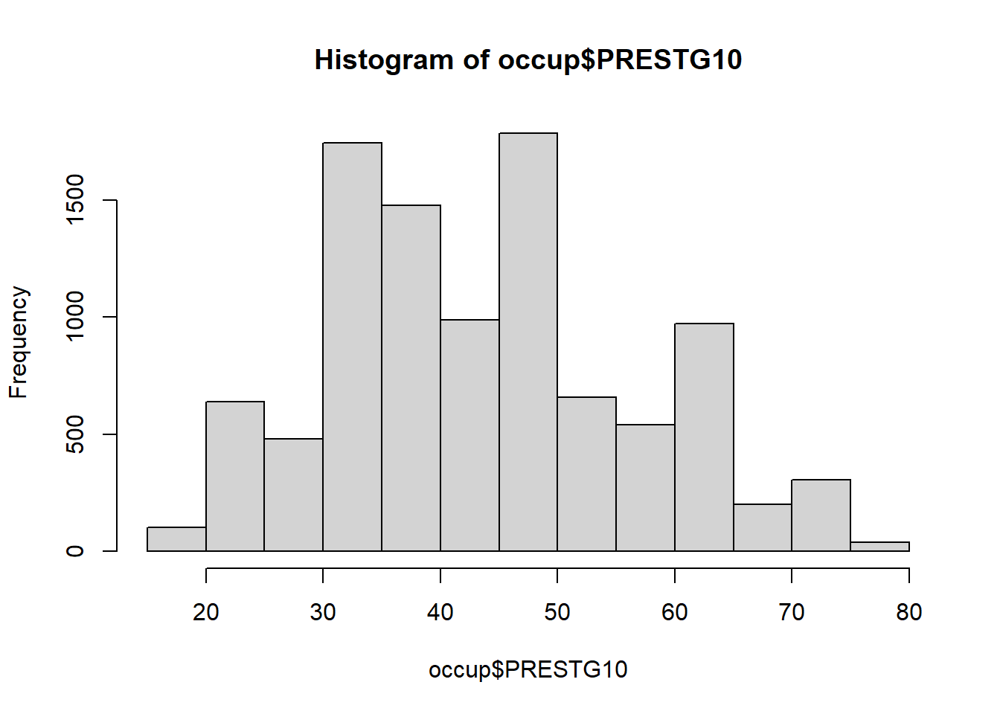
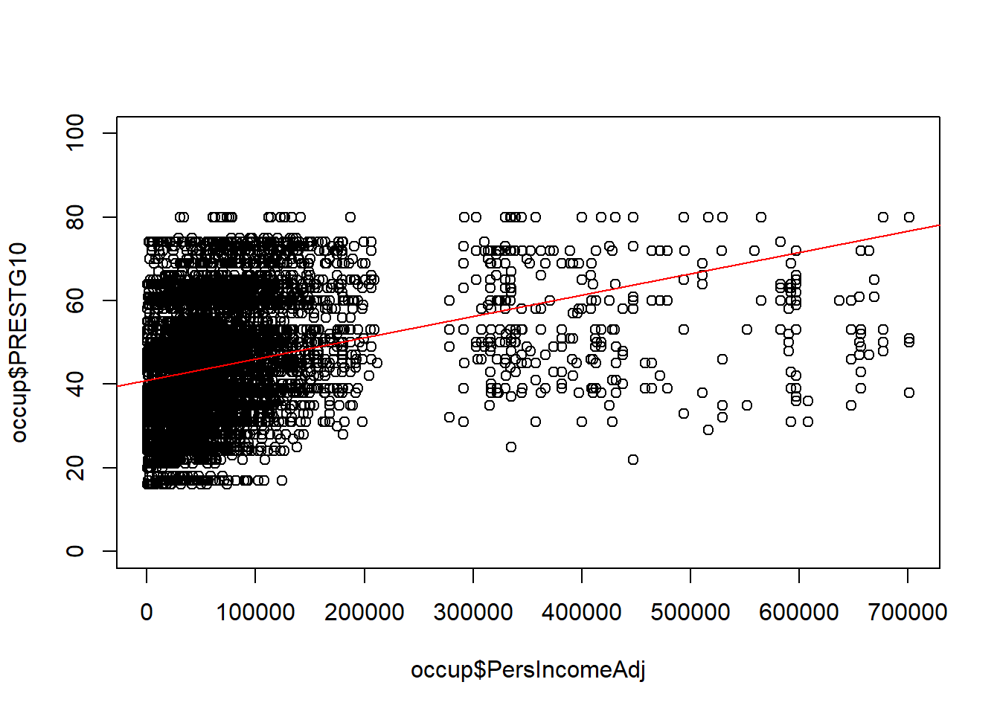
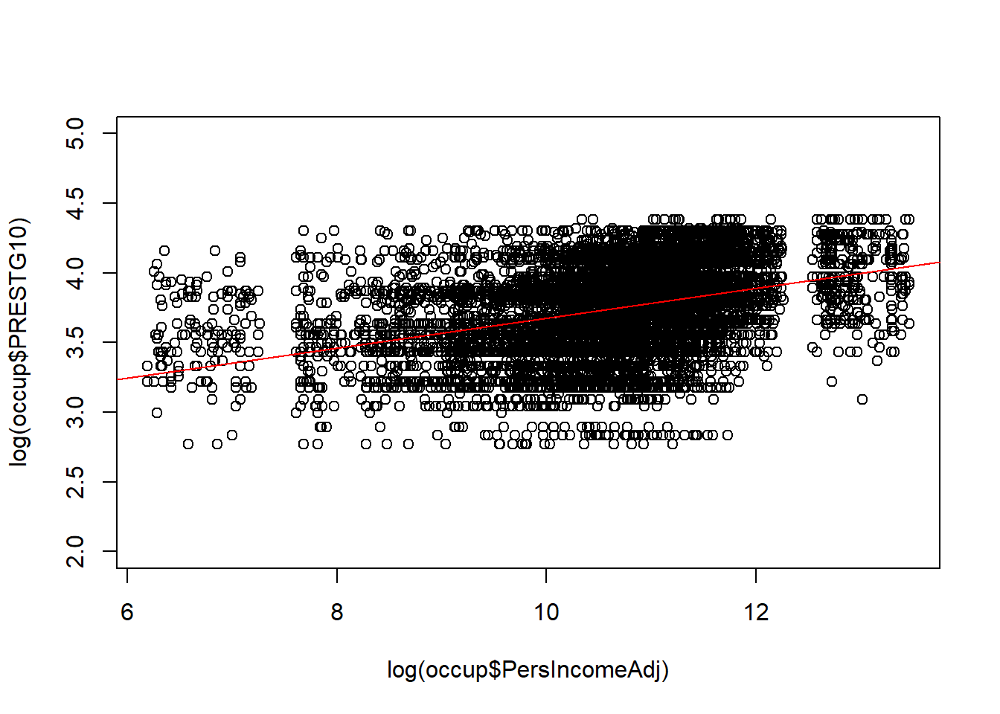
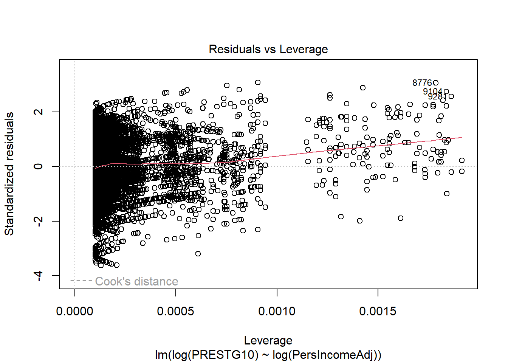
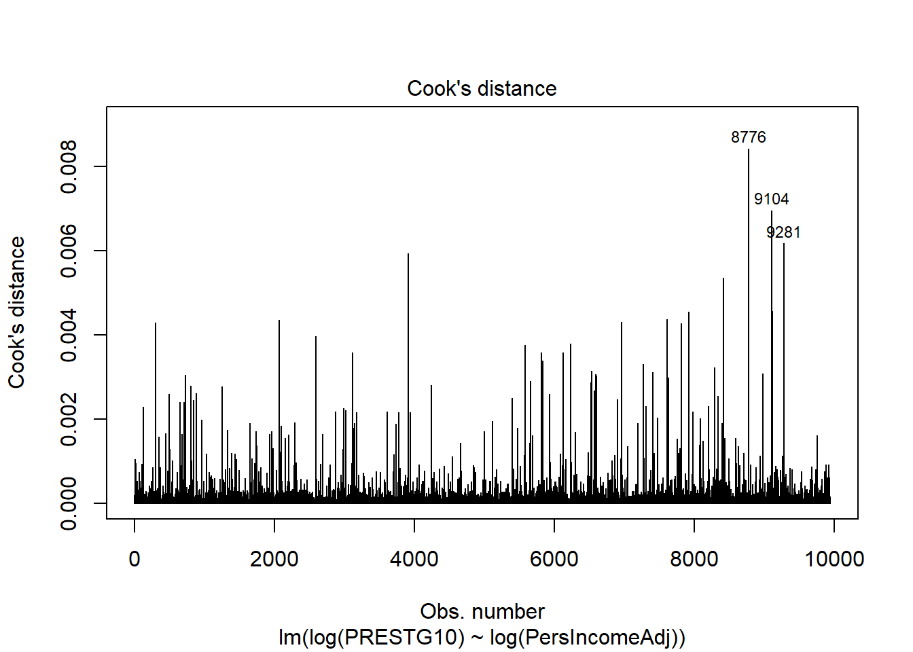
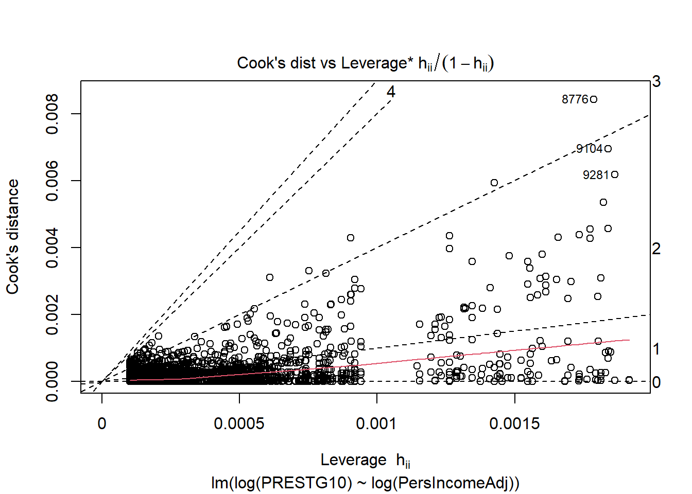
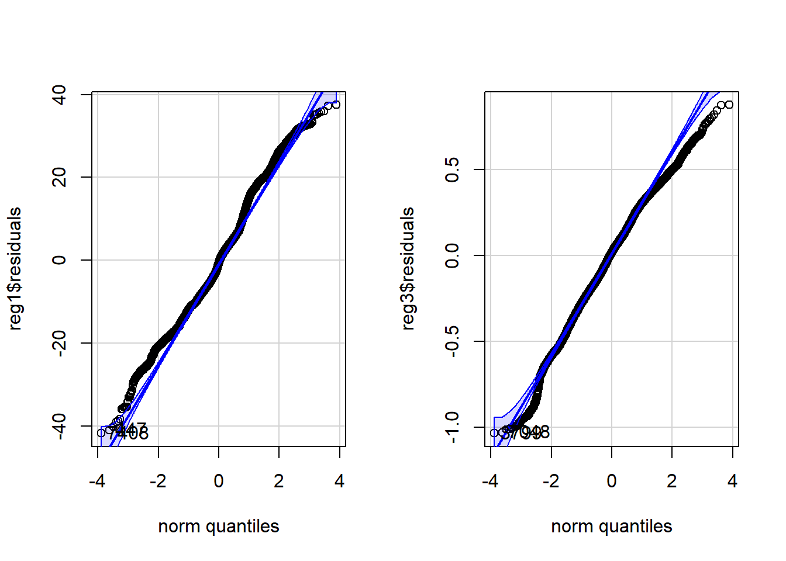

Linear Regression I
Lauren Cipriano
2024-10-07
Introduction
Learning objectives of this asynchronous lesson:
- Demonstrate simple regression
- Interpret regression coefficients and hypothesis tests
- Evaluate underlying assumptions of regression
Data set
For this set of examples, I will use the Occupational Prestige dataset. This dataset was created using survey responses to the General Social Survey from 1971–2021. The dataset includes variables for the survey year (YEAR), respondent age (AGE), SEX, etc. The variable PersIncomeAdj was created by me combining many different categorical income variables over time using the average value within each range and then inflation adjusting to 2023 dollars. Occupational Prestige, a continuous variable measured on a 0-100 scale, is reported in PRESTG10.
You can look up any of the variables on the GSS Website.
To keep things straightforward, I have removed any observation with missing data for any variable in this dataset. We will talk about more appropriate strategies for handling missing data in a later discussion.
occup <- read.csv(url("https://laurencipriano.github.io/IveyBusinessStatistics/Datasets/PrestigeData.csv"),
header = TRUE)
## suppress scientific notation for ease of reading numbers
options(scipen=99) Simple linear regression
The first thing we always need to consider is what will be our Dependent Variable. For these examples, we will use Occupational Prestige. The Dependent Variable for a linear regression is always a continuous measure.
In our first example, we will have one Predictor Variable. Predictor Variables can be continuous, binary, or categorical. Continuous variables have the most straightforward interpretation, so let’s start there.
Our first regression model will be \[\text{Occupational Prestige} = \beta_0 + \beta_1 \times \text{Income}\].
## perform a linear regression
## dependent variable: occupational prestige (continuous)
## independent variable: income (continuous)
reg1 <- lm(PRESTG10 ~ PersIncomeAdj, data=occup)
summary(reg1)>
> Call:
> lm(formula = PRESTG10 ~ PersIncomeAdj, data = occup)
>
> Residuals:
> Min 1Q Median 3Q Max
> -41.79 -9.21 -0.86 7.22 37.51
>
> Coefficients:
> Estimate Std. Error t value Pr(>|t|)
> (Intercept) 40.91359352 0.16354296 250.2 <0.0000000000000002 ***
> PersIncomeAdj 0.00005114 0.00000158 32.3 <0.0000000000000002 ***
> ---
> Signif. codes: 0 '***' 0.001 '**' 0.01 '*' 0.05 '.' 0.1 ' ' 1
>
> Residual standard error: 12.5 on 9935 degrees of freedom
> Multiple R-squared: 0.095, Adjusted R-squared: 0.0949
> F-statistic: 1.04e+03 on 1 and 9935 DF, p-value: <0.0000000000000002From this output, we can see that the equation of the line is \[\text{Occupational Prestige} = 40.91 + 0.000051 \times \text{Income}\].
In the line reporting the coefficient for \(\text{PersIncomeAdj}\), there is also a hypothesis test. This hypothesis test is evaluating whether the slope of the line, \(\beta_1\) is zero or not. The hypothesis test is a one-sample t-test and so the test reports a t-value and a p-value. If the p-value is <0.05, we say that the predictor is statistically significant.
R also outputs the R-squared and Adjusted R-squared values. R-squared represents the proportion of the variation in the Dependent Variable that is explained by the linear combination of the Predictor Variables.
The F-statistic and it’s associated p-value represent the output of an overall ANOVA test. The null hypothesis of this test is that all the slope coefficients are zero. In this case, that is only \(\beta_1\). As a result, the p-value for the t-test evaluating whether that single coefficient is equal to zero is exactly the same as the p-value for the F-test.
Finally, R presents the Residual Standard Error; in this case, 12.45. This value is the standard error for the prediction. So, if you use this regression model to predict the Occupational Prestige value of a single new observation, this standard error represents the uncertainty for that individual observation. This is often used for simulation!
Note:
In R, it is not necessary, but frequently useful to create a regression object by assigning the output of the regression to a new object (in this case, ‘reg1’). There are many pieces of information contained in the regression object that you will be able to extract. The most useful starting report is simply summary() of the linear regression object which provides a complete overview of the model.
If you do not create a regression object, R will simply print the intercept and slope coefficients without hypothesis tests.
Let’s visualize the line of best fit that we have generated on the data.
## visualize the line of best fit
plot(occup$PersIncomeAdj, occup$PRESTG10)
abline(reg1, col="red")This visualization already begins to raise red flags that this is not a good regression model. Let’s take a look at all the steps of a linear regression to see what we could improve about this one.
Assumptions of a linear regression
A regression line can be fit to any set of data, but this doesn’t mean that linear regression is a good model of the system.
Regression models must satisfy a set of key assumptions to be useful
Assumption 1: Linearity. The system is linear for each predictor variable and overall.
Assumption 2: Independent observations. The data need to come from a random sample where each observation is independent of other observations. Each observation has equal contribution to the regression line.
Assumption 3: Independent Predictor variables. The predictor variables must be independent of each other for the coefficients to be interpretable. If the predictor variables are highly correlated it is called “multicollinearity”.
Assumption 4: Homogeneity of variance. The regression residuals are equally likely to be large or small over the range of predicted values.
Assumption 5: Normality. The distribution of the residuals should be Normally distributed.
Step-by-Step: How to perform linear regression
Identify your Dependent variable and potential predictor variables
Visualize the data
- Visualize the distribution of Dependent and potential predictor variables (histograms)
- Visualize the bivariate relationships between Dependent and potential predictor variables (XY scatters, bargraphs, boxplots)
Evaluate the correlation among potential predictor variables
Develop candidate multiple regression models
Revise and compare your models (e.g., drop predictors with high p-values)
Assess whether the underlying assumptions of regression are satisfied
Choose between models satisfying underlying assumptions of regression
Analyze and interpret model output
- Interpretation of coefficients
- Prediction intervals
Example Step-by-Step
This example is highly simplified because there is only one predictor (Income).
Step 0. Identify variables
In this example, we are trying to identify the role of Income in predicting Occupational Prestige.
The Dependent Variable is Occupational Prestige, a continuous variable measured on 0-100.
The (sole) predictor variable is Income, also a continuous variable.
Step 1. Visualize the data
You can never really visualize your data too much.
1a. Visualize univariate distributions
First, make histograms of your Dependent Variable and all your continuous predictor variables. For categorical predictor variables, draw boxplots. At this stage, this is for information only.
But, it is common to transform highly skewed variables. Often highly skewed variables cause the residuals to be non-normal and contribute to problems with variance. Log-transforming or square-root transforming right skewed variables, and exponentiating left-skewed variables can improve the regression model. Generally, it is useful to wait until – at least – after step 1b, when we evaluate linearity of the relationship between potential predictors and the dependent variable, before considering transformations.
## Histogram of Occupational Prestige (Dependent Variable)
hist(occup$PRESTG10)
## Histogram of Income (Predictor Variable)
hist(occup$PersIncomeAdj)Immediately, we can see that Occupational Prestige, while not really Normally distributed, is not highly skewed in either direction.
Income, on the other hand, is highly right skewed. We note this for later because it makes Income a candidate for transformation.
1b. Visualize bivariate relationships with Dependent Variable
This step is important for evaluating whether the relationship between the Dependent Variable and each Predictor is linear. In a simple regression, this assessment is straightforward. In a multiple regression, linear relationships can be conditional on the behaviour of another variable. In a complex multiple regression, linearity of the relationship is better assessed using the residuals vs each predictor and the residuals vs. the fitted values.
## visualize the line of best fit
plot(occup$PersIncomeAdj, occup$PRESTG10, ylim=c(0,100))
abline(lm(occup$PRESTG10 ~ occup$PersIncomeAdj), col="red")
This is not a good representation of a linear relationship. Because this is a simple linear regression with no other Predictor Variables, we can make a decision right now to explore transformation of Income and simultaneous transformation of both Income and Occupational Prestige in order to improve the regression.
What we are looking for at this stage is whether or not we can improve the linearity of the relationship between the Dependent Variable and the Predictor Variables.
## Consider log-transforming Income
plot(log(occup$PersIncomeAdj), occup$PRESTG10, ylim=c(0,100))
abline(lm(occup$PRESTG10 ~ log(occup$PersIncomeAdj)), col="red")## Consider log-transforming of both Income and Occupational Prestige
plot(log(occup$PersIncomeAdj), log(occup$PRESTG10), ylim=c(2,5))
abline(lm(log(occup$PRESTG10) ~ log(occup$PersIncomeAdj)), col="red")
Based on these graphs, both of these appear to be better than the bivariate relationship without any transformation.
In the graph with log(Income) only, the observations are not evenly distributed above and below the line. There appear to be more observations clustered below the line.
In the graph with log(Income) and log(Occupational Prestige), the line appears more centered in the observations, the data appears somewhat more linear, but there also appears to be substantial impact of the ceiling effect with a lot of points crowding into the top of the graph.
Because it is the best representation of a linear relationship, we take the log transformed model forward to Step 3.
Step 2. Evaluate the correlation among potential predictor variables
This example is only simple linear regression, so there is nothing to do at this step because there is only one predictor.
Step 3. Develop candidate multiple regression models
We only have one predictor, so you might think that there is only one candidate regression model. However, different transformations that can improve the linearity, stability of variance, or the Normality of the residuals can also be considered as material for candidate models. We can evaluate all three of the possible log-transformed models from Step 1.
## simple linear regression 1
## dependent variable: occupational prestige (continuous)
## independent variable: income (continuous)
reg1 <- lm(PRESTG10 ~ PersIncomeAdj, data=occup)
summary(reg1)>
> Call:
> lm(formula = PRESTG10 ~ PersIncomeAdj, data = occup)
>
> Residuals:
> Min 1Q Median 3Q Max
> -41.79 -9.21 -0.86 7.22 37.51
>
> Coefficients:
> Estimate Std. Error t value Pr(>|t|)
> (Intercept) 40.91359352 0.16354296 250.2 <0.0000000000000002 ***
> PersIncomeAdj 0.00005114 0.00000158 32.3 <0.0000000000000002 ***
> ---
> Signif. codes: 0 '***' 0.001 '**' 0.01 '*' 0.05 '.' 0.1 ' ' 1
>
> Residual standard error: 12.5 on 9935 degrees of freedom
> Multiple R-squared: 0.095, Adjusted R-squared: 0.0949
> F-statistic: 1.04e+03 on 1 and 9935 DF, p-value: <0.0000000000000002## simple linear regression 2
## dependent variable: occupational prestige (continuous)
## independent variable: income (continuous) - log transformed
reg2 <- lm(PRESTG10 ~ log(PersIncomeAdj), data=occup)
summary(reg2)>
> Call:
> lm(formula = PRESTG10 ~ log(PersIncomeAdj), data = occup)
>
> Residuals:
> Min 1Q Median 3Q Max
> -33.13 -9.12 -0.94 8.14 43.25
>
> Coefficients:
> Estimate Std. Error t value Pr(>|t|)
> (Intercept) -4.392 1.245 -3.53 0.00042 ***
> log(PersIncomeAdj) 4.575 0.116 39.30 < 0.0000000000000002 ***
> ---
> Signif. codes: 0 '***' 0.001 '**' 0.01 '*' 0.05 '.' 0.1 ' ' 1
>
> Residual standard error: 12.2 on 9935 degrees of freedom
> Multiple R-squared: 0.135, Adjusted R-squared: 0.134
> F-statistic: 1.54e+03 on 1 and 9935 DF, p-value: <0.0000000000000002## simple linear regression 3
## dependent variable: occupational prestige (continuous) - log transformed
## independent variable: income (continuous) - log transformed
reg3 <- lm(log(PRESTG10) ~ log(PersIncomeAdj), data=occup)
summary(reg3)>
> Call:
> lm(formula = log(PRESTG10) ~ log(PersIncomeAdj), data = occup)
>
> Residuals:
> Min 1Q Median 3Q Max
> -1.033 -0.189 0.017 0.210 0.876
>
> Coefficients:
> Estimate Std. Error t value Pr(>|t|)
> (Intercept) 2.60371 0.02914 89.4 <0.0000000000000002 ***
> log(PersIncomeAdj) 0.10728 0.00272 39.4 <0.0000000000000002 ***
> ---
> Signif. codes: 0 '***' 0.001 '**' 0.01 '*' 0.05 '.' 0.1 ' ' 1
>
> Residual standard error: 0.285 on 9935 degrees of freedom
> Multiple R-squared: 0.135, Adjusted R-squared: 0.135
> F-statistic: 1.55e+03 on 1 and 9935 DF, p-value: <0.0000000000000002Step 4. Revise and compare your models (e.g., drop predictors with high p-values)
We can see that in all three of our candidate models, the single Predictor Variable has a p-value less than 0.05.
Step 5. Assess whether the underlying assumptions of regression are satisfied
Assumption 1: Linearity
We already looked at linearity directly in Step 1b. This is more straightforward in a simple linear regression than in a multiple regression. In multiple regression, we can also use the residual plots to evaluate linearity.
Residuals are the difference between the actual data point and the predicted y-value on the line of best fit. You can either graph them in their raw units, or standardize them. Standardizing means Z-scores. Standardizing isn’t required, but it can help get an early peak at the influence of outliers and whether or not the residuals are Normally distributed.
For contrast, I will make the plots for Regression 1 (no transformation) and Regression 3 (with both log transformations) side-by-side.
Illustrations 1: Plot of standardized residuals vs. Predictor
par( mfrow= c( 1,2 ) )
## simple linear regression 1
plot(x=occup$PersIncomeAdj , y=rstandard(reg1))
abline(0, 0, lty=2, col="grey") # draw a straight line at 0 for a visual reference
lines(lowess(occup$PersIncomeAdj, rstandard(reg1)), col = "red", lwd = 2)
## simple linear regression 3
plot(x=log(occup$PersIncomeAdj) , y=rstandard(reg3))
abline(0, 0, lty=2, col="grey") # draw a straight line at 0 for a visual reference
lines(lowess(log(occup$PersIncomeAdj), rstandard(reg3)), col = "red", lwd = 2) Ideally, the residual points are evenly distributed above and below the
grey dashed line, evenly distributed from left to right, 66% of the
points will be within +/- 1 SD on the y-axis, and less than 5% of points
will be further than +/- 2 SD on the y-axis. The red line illustrates
the lowess line (the locally weighted scatterplot smoothing line).
Ideally, this line is a straight horizontal line at zero.
Ideally, the residual points are evenly distributed above and below the
grey dashed line, evenly distributed from left to right, 66% of the
points will be within +/- 1 SD on the y-axis, and less than 5% of points
will be further than +/- 2 SD on the y-axis. The red line illustrates
the lowess line (the locally weighted scatterplot smoothing line).
Ideally, this line is a straight horizontal line at zero.
Compared to the graph on the left, the graph on the right representing the log transformed regression is much better, but it is not ideal.
Patterns of specific concern include
1. If you see something that looks like a U or upside-down U. This
pattern generally indicates that there is a non-linearity with respect
the predictor. In this case, consider adding a squared term to the model
or categorize the data.
- If you see something that looks like a > or < pattern. This pattern generally indicates that the variance is not constant with respect to that variable. A variance stabilizing transformation may improve the model quality.
Illustrations 2: Plot of standardized residuals vs. Fitted Values
These graphs look identical to the previous ones because there is only one predictor. In a multiple variable regression, they would be different than any of the individual predictor graphs.
Ideally, the residual points are evenly distributed above and below the grey dashed line, evenly distributed from left to right, 66% of the points will be within +/- 1 SD on the y-axis, and less than 5% of points will be further than +/- 2 SD on the y-axis. The red line illustrates the lowess line (the locally weighted scatterplot smoothing line). Ideally, this line is a straight horizontal line at zero.
Patterns of specific concern include
1. If you see something that looks like a U or upside-down U. This
pattern generally indicates that there is a non-linearity with respect
one or more predictor. Inspecting the graphs for each predictor should
help narrow down the source of the problem.
- If you see something that looks like a > or < pattern. This pattern generally indicates that the variance is not constant. A variance stabilizing transformation may improve the model quality. Inspecting the graphs for each predictor should help narrow down the source of the problem and transforming a single predictor may solve the problem. It may also be necessary to transform the dependent variable.
Assumption 2: Independent errors & equal contribution of each observation
First, we can evaluate the assumption of independent errors by inspecting the residual plots. If there appears to be a pattern in the residuals, there may be remaining variance that can be explained by additional predictor variables, or by a non-linear term of that predictor.
In some datasets, when the observations are collected in a sequence (over time), it is particularly important to inspect the data for correlation between values in sequence. One way of evaluating that is to look at the residuals against the observation order.
Illustrations 3: Plot of standardized residuals vs. Observation number
par( mfrow= c( 1,2 ) )
## simple linear regression 1
plot(rstandard(reg1))
abline(0, 0, lty=2, col="grey") # draw a straight line at 0 for a visual reference
lines(lowess( rstandard(reg1)), col = "red", lwd = 2)
## simple linear regression 3
plot(rstandard(reg3))
abline(0, 0, lty=2, col="grey") # draw a straight line at 0 for a visual reference
lines(lowess(rstandard(reg3)), col = "red", lwd = 2)This plot is generally only considered when the observation order is meaningful.
In this case, the survey respondent number is not a meaningful order and we see exactly what we would expect: The residual points are evenly distributed above and below the grey dashed line, evenly distributed from left to right, 66% of the points will be within +/- 1 SD on the y-axis, and less than 5% of points will be further than +/- 2 SD on the y-axis. The red lowess line illustrates a straight horizontal line at zero.
Illustrations 4: Evaluating whether any observation has too much influence
No single point should contribute more than any other to the position the the regression line. But, sometimes individual observations will have greater “influence” than others. Sometimes these points will be outliers, but that is not always the case.
Outliers: Any point with a very large residual (standardized residual > 3 or 4). Outliers can draw the regression line to themselves actually worsening the fit to other points. Any outlier should be investigated for whether it has high leverage, and, more importantly, high influence. Sometimes outliers are data entry errors. Other times they represent true heterogeneity in the data. Outliers should never be summarily removed just for being outliers.
Leverage: A point has high leverage if it contributes more than the average amount to the regression line. Leverage is only remarkable when it is combined with high influence. Leverage values greater than 2 times the number of predictors divided by the sample size to indicate high leverage observations.
Influence: A point is influential if its deletion substantially changes the fitted model. There are several measures of influence; we will only introduce Cook’s distance which is precisely the measure of the change in the fitted model with and without the observation. Often Cook’s distance of greater than 1 is considered highly influential.
par( mfrow= c( 1,1 ) )
## Residuals vs. Leverage
plot(reg3, 5)
## Cook's distance
plot(reg3, 4)
## Cook's distance vs. Leverage
plot(reg3, 6)
If these plots identify any points with high leverage and high influence, those points can and should be inspected for their impact on the model.
A cluster of highly influential points may identify a source of variance that has not yet been captured by the model and may be captured with an additional predictor variable.
A cluster of highly influential points that cannot be explained with an additional predictor may be a challenge to deal with. Alternative modelling approaches, including weighted least squares, may be appropriate.
Assumption 3: No multicollinearity (Independent predictors)
With only one predictor, this assumption is not relevent because it speaks to the relationship of Predictor Variables with other Predictor Variables.
Methods to evaluate this assumptions are
1. Evaluate correlation matrix in advance. Do not put two Predictor
Variables in the same candidate model if they have more than \(|0.4|\) correlation.
- Variance inflation factor (VIF). VIF above 4 warrant additional scrutiny. VIF over 10 indicates substantial multicollinearity.
Assumption 4: Homogeneity of residual variance
The residual plots developed to evaluate Assumption 1 (Linearity) also illustrate insight into this assumption.
If any of the residual plots (vs. any predictor or fitted values) display a < or > pattern in the residuals, this indicates the residual variance is not constant. A variance stabilizing transformation may improve the model quality. Inspecting the graphs for each predictor should help narrow down the source of the problem and transforming a single predictor may solve the problem. It may also be necessary to transform the dependent variable.
Assumption 5: Residuals are Normally distributed
Illustrations 5: Evaluating Normality of the residuals
We use a QQ plot to evaluate whether the residuals are Normally distributed. Ideally, the residuals form a straight line. Deviation from the straight line is common in the tails of the distribution.
library(car)
par( mfrow= c( 1,2 ) )
## simple linear regression 1: qq plot
qqPlot(reg1$residuals)> [1] 7408 447## simple linear regression 3: qq plot
qqPlot(reg3$residuals)
> [1] 3799 7048Step 6. Choose between models satisfying underlying assumptions of regression
In this case, primarily based on the linearity, Regression 3 is the best fitting model. There is room for improvement in this model; the residual graphs indicate that addition of a nonlinear term may improve the model.
Step 7. Analyze and interpret model output
7a. Interpretation of coefficients
In this case, we can identify that it appears the relationship between Income and Occupational Prestige is statistically significant.
## simple linear regression 3
summary(reg3)>
> Call:
> lm(formula = log(PRESTG10) ~ log(PersIncomeAdj), data = occup)
>
> Residuals:
> Min 1Q Median 3Q Max
> -1.033 -0.189 0.017 0.210 0.876
>
> Coefficients:
> Estimate Std. Error t value Pr(>|t|)
> (Intercept) 2.60371 0.02914 89.4 <0.0000000000000002 ***
> log(PersIncomeAdj) 0.10728 0.00272 39.4 <0.0000000000000002 ***
> ---
> Signif. codes: 0 '***' 0.001 '**' 0.01 '*' 0.05 '.' 0.1 ' ' 1
>
> Residual standard error: 0.285 on 9935 degrees of freedom
> Multiple R-squared: 0.135, Adjusted R-squared: 0.135
> F-statistic: 1.55e+03 on 1 and 9935 DF, p-value: <0.0000000000000002For each 1 unit change in log(Income), there is a 0.107-point increase in log(Occupational Prestige). This is not very interpretable.
It turns out that log-log models have a special interpretability: A 1% increase in the predictor corresponds to a \(\beta\)-% increase in the dependent variable. In this case, that means a 1% increase in Income corresponds to a 0.1-% increase in Occupational Prestige.
7b. Prediction intervals
There are two types of prediction.
First, we can want to predict a new observation. For example, what is the estimated Occupational Prestige for a single individual with an income of $50,000? The uncertainty around this estimate represents the full standard deviation of the population of people with an income of $50,000. In this case, we use the predict function with \(interval = ``prediction''\). In this case, note that we generate predicted values of log(Occupational Prestige).
## make a dataframe of the new observations
newperson = data.frame(PersIncomeAdj = 50000)
## generate a prediction of log(Occupational Prestige)
predict(reg3, newdata=newperson, interval = "prediction")> fit lwr upr
> 1 3.76 3.21 4.32## generate a prediction of Occupational Prestige
exp(predict(reg3, newdata=newperson, interval = "prediction"))> fit lwr upr
> 1 43.1 24.7 75.4Second, we might be interested in the mean and the uncertainty around the mean for a population of people with incomes of $50,000. In that case, the uncertainy represents the standard error, or uncertainty around the mean estimate, not the full heterogeneity in the population. In this case, we use the predict function with \(interval = ``confidence''\). Again, we generate predicted values of log(Occupational Prestige).
## make a dataframe of the new observations
newperson = data.frame(PersIncomeAdj = 50000)
## generate a prediction of log(Occupational Prestige)
predict(reg3, newdata=newperson, interval = "confidence")> fit lwr upr
> 1 3.76 3.76 3.77## generate a prediction of Occupational Prestige
exp(predict(reg3, newdata=newperson, interval = "confidence"))> fit lwr upr
> 1 43.1 42.9 43.4We are much less uncertain about where the mean value is for a population of people with income of $50,000 than we are for a single member of that population.